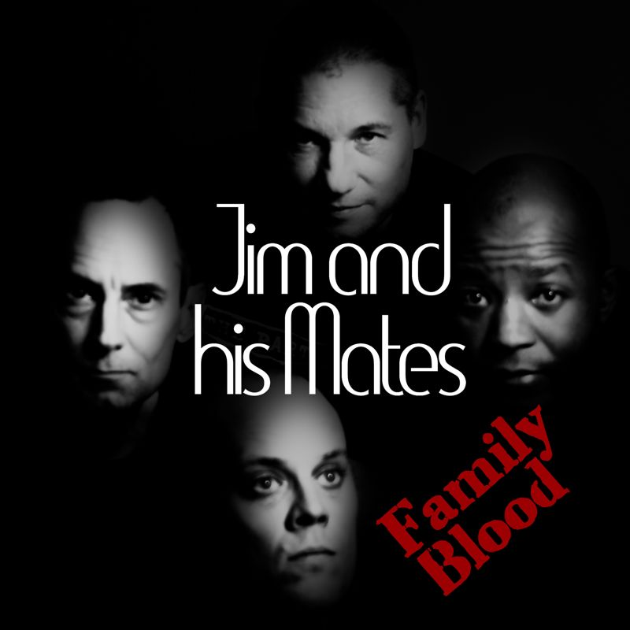

Om Ugli Sounds
Musikbolaget Ugli Sounds grundades av Fredrik Kivi 2014 i och med lanseringen av Opinionens debut Historien om. Opinionen gav ut ytterligare fyra singlar innan upplösningen 2018. Ugli Sounds har även arbetat med Jim and his Mates. Alla utgivningar finns på relevanta plattformar som Spotify, Apple Music, Deezer och Tidal.
Musikbolaget är ett dotterbolag till Ugli AB, vars huvudsakliga verksamhet är IT.
Utgivningar
Opinionen
Jim and his Mates

Fredrik Kivi
Fredrik Kivis egen musik hittar du på www.fredrikkivi.se.